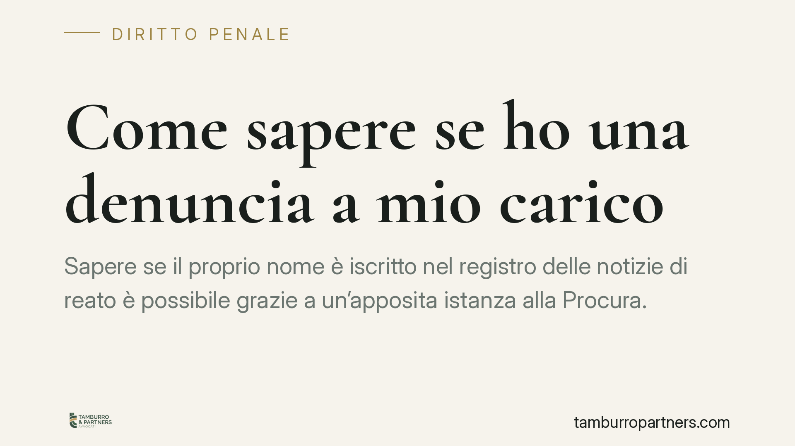

Come sapere se ho una denuncia a mio carico
Sapere se il proprio nome è iscritto nel registro delle notizie di reato è possibile grazie a un'apposita istanza alla Procura. Lo strumento ha però confini precisi: alcune iscrizioni restano riservate e l'esito fotografa solo un momento. Ecco come funziona la verifica prevista dall'art. 335 del codice di procedura penale e quali cautele conviene adottare.

Il punto di partenza: il registro delle notizie di reato
Quando una notizia di reato giunge alla Procura della Repubblica, il Pubblico Ministero la iscrive in un apposito registro, con l'indicazione del nome della persona a cui il reato è attribuito. È l'iscrizione disciplinata dall'art. 335 del codice di procedura penale.
Contrariamente a un'idea diffusa, questa iscrizione non è un semplice adempimento burocratico. Si tratta di un atto del procedimento penale con effetti processuali concreti: tra l'altro, segna il momento da cui decorrono i termini per la durata delle indagini preliminari (art. 405 c.p.p.). Per questo conoscere la propria posizione può avere rilievo pratico non trascurabile.
Inquadramento normativo
Lo strumento di verifica è previsto dall'art. 335, comma 3, c.p.p.: chi vi abbia interesse può presentare istanza alla Procura per sapere se risultano a suo carico iscrizioni comunicabili. La risposta, però, non è sempre dovuta.
La legge distingue infatti tra iscrizioni comunicabili e iscrizioni che restano segrete. Per i reati più gravi, in particolare quelli elencati all'art. 407, comma 2, lett. a), c.p.p. (categoria che comprende, tra gli altri, i delitti di criminalità organizzata e i reati di maggiore allarme sociale), il Pubblico Ministero può decretare che l'informazione non sia fornita, a tutela delle indagini. Questa disciplina si salda con il segreto sugli atti di indagine previsto dall'art. 329 c.p.p.
Va infine segnalato l'art. 335-bis c.p.p., introdotto dalla riforma Cartabia (D.Lgs. 150/2022): la disposizione stabilisce che la mera iscrizione nel registro non può, di per sé, essere considerata indice di responsabilità o di colpevolezza. È un principio importante, che riafferma la presunzione di innocenza fino a sentenza definitiva. *(Formulazione e collocazione della norma da verificare sulla versione vigente del codice.)*
Cosa può risultare dalla richiesta
L'istanza ex art. 335 c.p.p. può avere tre esiti:
- Nessuna iscrizione: alla data della richiesta non risultano procedimenti comunicabili a proprio carico presso quella Procura.
- Iscrizione comunicabile: viene fornita l'informazione sull'esistenza del procedimento e, di regola, sul reato ipotizzato.
- Diniego per segretazione: la Procura non fornisce il dato perché il reato rientra tra quelli ostativi o perché il PM ha disposto la riservatezza.
È essenziale comprendere due limiti. Primo: l'esito negativo fotografa solo il momento della richiesta, non offre garanzie sul futuro né esclude iscrizioni successive. Secondo: la verifica riguarda la singola Procura interpellata. Un procedimento pendente presso un ufficio giudiziario diverso non emergerà da quell'istanza.
Implicazioni pratiche
La verifica preventiva è cosa diversa dalla ricezione di un atto formale. Quando l'indagine assume una certa consistenza, il coinvolgimento della persona emerge attraverso comunicazioni tipiche: l'informazione di garanzia, l'invito a comparire, o l'avviso di conclusione delle indagini preliminari (art. 415-bis c.p.p.).
Chi ha il fondato sospetto di essere coinvolto in una vicenda penale può quindi muoversi in anticipo, senza attendere la notifica di un atto. Conoscere per tempo la propria posizione consente di organizzare la difesa e di valutare le scelte processuali con maggiore lucidità. Un diniego per segretazione, d'altra parte, non equivale a una conferma: significa soltanto che la Procura non è tenuta a rispondere in quel caso.
Cosa fare in concreto
- Presenta l'istanza ex art. 335, comma 3, c.p.p. alla Procura territorialmente competente, di norma quella del luogo in cui si ipotizza commesso il fatto.
- Individua le Procure rilevanti: se i fatti riguardano luoghi diversi, la verifica va estesa a più uffici, perché la risposta copre solo quello interpellato.
- Conserva la ricevuta e la data: l'esito vale per il momento della richiesta e potrà essere utile documentarlo.
- Interpreta con prudenza il diniego: un mancato riscontro può dipendere dalla segretazione e non va letto automaticamente come assenza di procedimenti.
- Valuta un supporto tecnico: è opportuno rivolgersi a un difensore prima di intraprendere iniziative, sia per la corretta formulazione dell'istanza sia per l'analisi delle possibili conseguenze.
---
Contributo informativo a cura di Tamburro & Partners – Avv. Giuseppe Tamburro. Non costituisce parere legale.
Ogni condominio ha una storia a sé.
Se gestisci un'amministrazione e vuoi un confronto su una specifica questione condominiale, scrivi allo studio. Ti rispondiamo entro un giorno lavorativo.